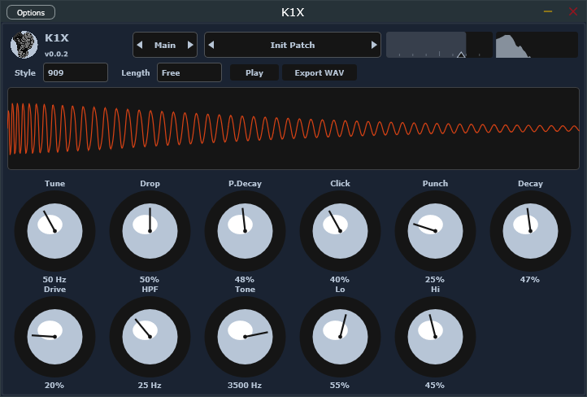
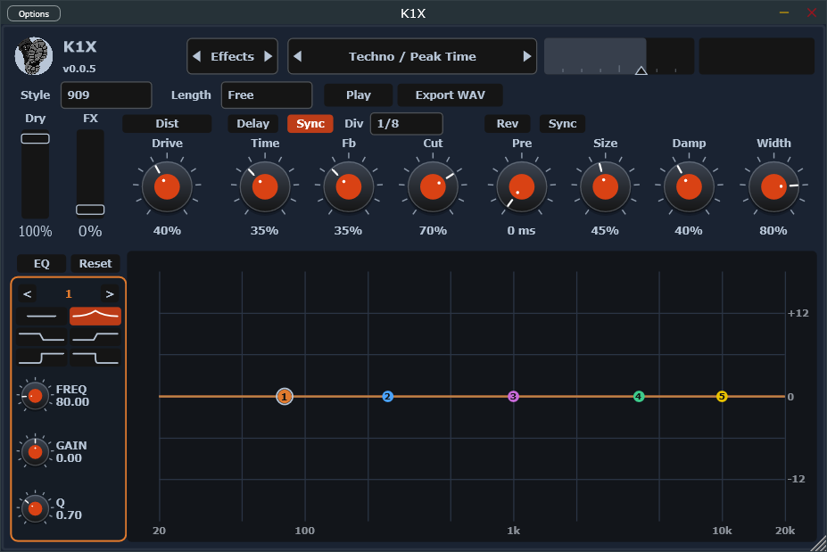

K1X
Kick drum. 909, 808, and friends.
Tune, click, decay, drive, filters, then a parallel FX send and post EQ. Length and reverb predelay can snap to the DAW tempo.


Sound
Sine body with a pitch drop and a noise click, then saturation, high-pass, tone, and lo/hi shelves. Main page is the kick. Effects page is Dry/FX (distortion, delay, reverb) plus post EQ. Reverb predelay is milliseconds, or Sync detents the knob to 1/64–1/8. Spectrum is the processed output. Waveform preview stays the dry kick.
Standalone
Play previews the kick. Export WAV writes a stereo shot including FX tail.